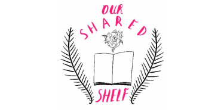

Emma Watson agit pour le féminisme
Emma Watson est connue pour avoir joué Hermione Granger dans la saga de film Harry Potter. Mais à l’heure actuelle, elle se bat pour le droit des femmes dans le monde et c’est comme ça qu’elle de fait connaitre.
La célébrité d'Emma Watson ?
Emma Watson est une actrice britannique née le 15 avril 1990 à Paris. Elle devient actrice à l'âge de 10 ans, dans le film Harry Potter. Sa célébrité brusque devient handicapante pour elle et son école Dragon School doit implémenter des règles pour la laisser en tranquille. Elle a aussi joué dans d'autre films comme La Belle et la Bête, ou encore Les Filles du docteur March. En parallèle de son travail, elle étudie dans le domaine de la littérature anglaise, jusqu'à obtention de son diplôme en mai 2014. Elle annoncera cette même année laisser temporairement de côté sa carrière d'actrice pour se concentrer sur plusieurs projets, notamment sur le féminisme.
Son action par sa célébrité
Emma Watson s'implique dans le féminisme en partageant ce qu'elle pense à sa communauté. Elle ouvre donc un club de lecture le 8 janvier 2016 nommé Our Shared Shelf, sur la plateforme Goodreads. Elle y a attiré d'autre personnalité comme e Gloria Steinem, Sophia Bush, Abby Wambach ou Kate Voegele. Son club atteint les 96 000 membres en février 2016. Mais en janvier 2020, elle annonce qu'elle va s'écarter de son club, mais qu'elle reste impliquée.
Son action par ses activités
L'ONU femmes la nommera en juillet 2014 ambassadrice de bonne volonté. Suite à cela, elle prononcera en septembre un discours au siège des nation Unie visant à régler en priorité l'égalité homme-femme dans le monde. A son avis, le féminisme n'est pas un "man-hating" (haine des hommes), mais un chemin vers cette égalité souhaité. Lors de ce discours, elle paraît plutôt énervée. Elle dira un peu après qu'elle a reçu des menaces tentant à la dissuader de monter à la tribune, et que c'est la raison pour laquelle elle paraissait en colère.
Thomas MEURIE, le 19 octobre 2021